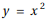
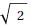
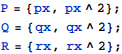
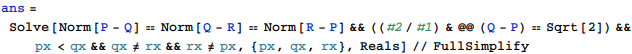
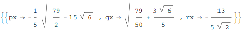
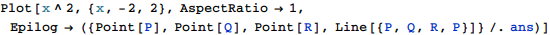
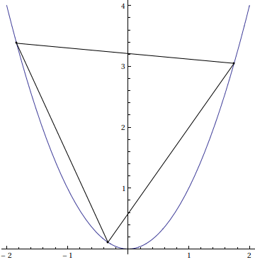
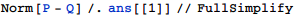
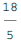

東京大学 2004年 理科 第1問
問題
x y平面の放物線上の3点P, Q, Rが次の条件を満たしている。
ΔPQRは一辺の長さaの正三角形であり、点P、Qを通る直線の傾きはである。
このとき、aの値を求めよ。
解答
P, Q, Rのx座標をそれぞれpx, qx, rx(px<qx)とおく。

PQRが正三角形および直線PQの傾きが であることから方程式を解いてpx, qx, rxを求める。




求めるaの値は


補足・感想
ゴリ押し